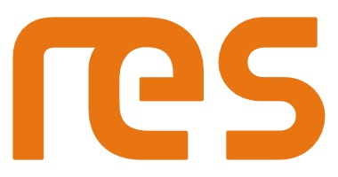
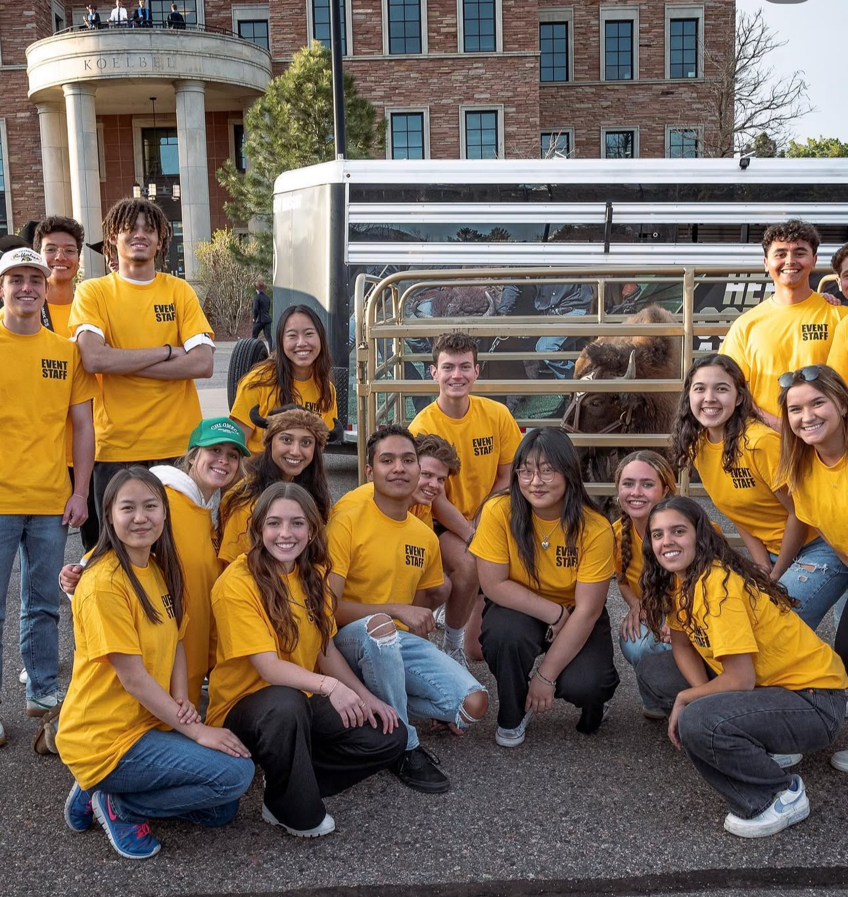

Assisted Customer Research & Insights team in Qualtrics survey and
dashboard creation to give stakeholders insight on Customer Experience metrics
Achieved 1st place in both the 2025 U.S Hackathon and the Global Hackathon competitions working
with a team of 5 to develop a new feature on the Cat Central app to boost new user engagement
Utilized Excel to execute ETL workflows to clean and structure
dealer survey data and create customer experience dashboards within Qualtrics
Marketing & Fan Experience Intern - CU Athletics Department
Description
Executed gameday operations and implementation of
in-game promotional marketing events for 6 varsity sports
Researched university athletic program's
fan promotional activities to draw inspiration for new promotions
People and Culture Intern - Renewable Energy Systems

Description
Researched 60 positions' average market salary range to form recommended salary ranges for
department leaders when staffing new positions
Leveraged Excel skills (X Lookup, Pivot Tables, Power Query) to create 15 salary range visualizations
placing over 500 jobs by department and career level
Applied PowerBI knowledge by developing a
People and Culture dashboard to display calculated insights
Student Representative - Leeds Student Government

Description
Representative in student led organization with the goal of maximizing the value of the Leeds School of Business
for its stakeholders (Students, Staff, and Community)
Led a team of 7 to facilitate all marketing efforts for Leeds Student Government
including marketing for school wide events and recruitment for Leeds Student Government itself
Managed official Instagram page and designed marketing materials to promote Leeds Student Government
events and initiatives, which resulted in a 30 percent increase in followers